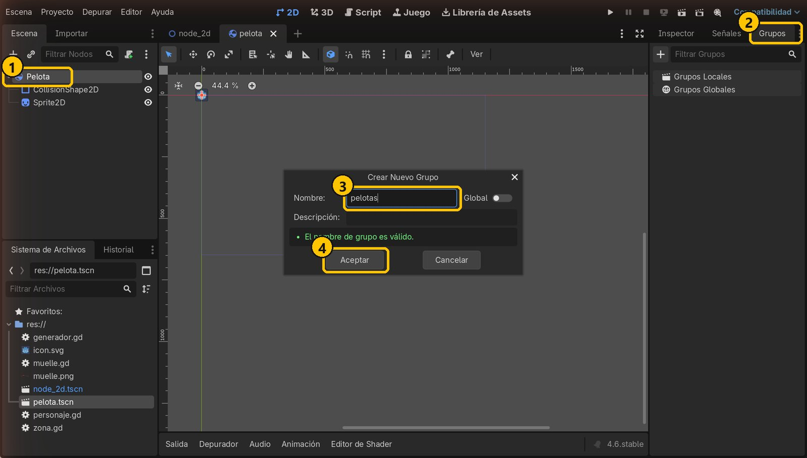
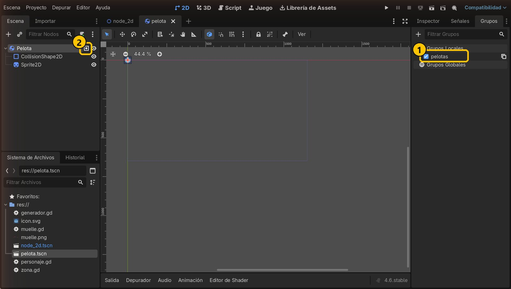
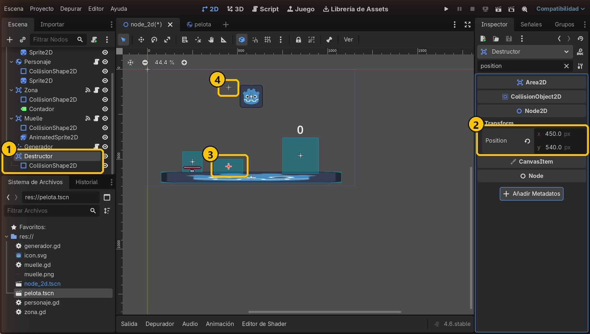
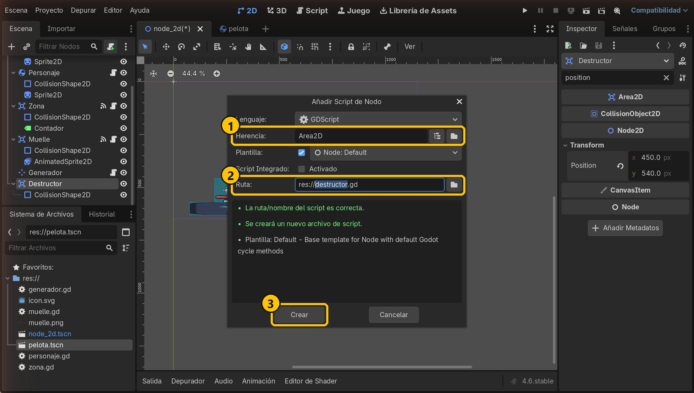
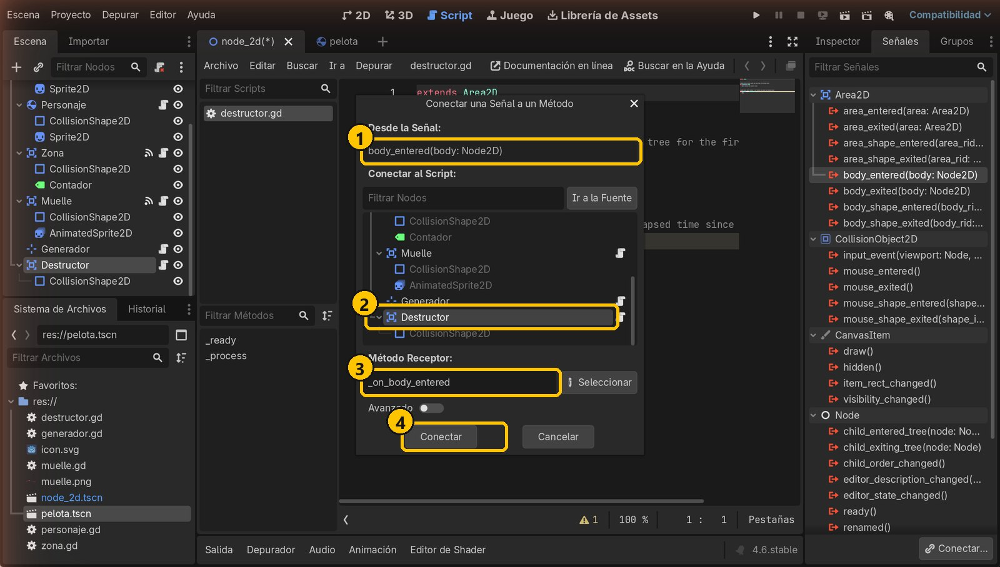
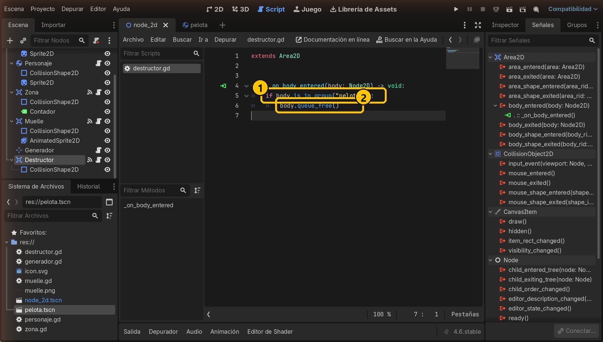
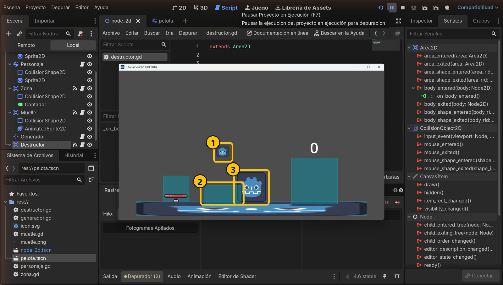

Objetivo
Al terminar, las pelotas que caigan sobre el Destructor (Area2D) desaparecerán del juego, pero el personaje podrá pasar por encima sin borrarse.
Partimos de: El proyecto del tutorial 5: Suelo, Personaje, Zona, Muelle y Generador que crea pelotas con Espacio.
Nodos que usamos
GrupoUna etiqueta que se pone a los nodos. Muchos nodos pueden llevar la misma.
is_in_group("nombre")Pregunta si un nodo lleva la etiqueta. Devuelve verdadero o falso.
queue_free()Borra el nodo del juego (al terminar el fotograma actual).
Paso a paso
1Crea el grupo «pelotas»
Abre pelota.tscn (doble clic en el Sistema de Archivos) y selecciona Pelota. En la pestaña Grupos, pulsa +, escribe pelotas y pulsa Aceptar.

- 1Pelota
- 2Pestaña Grupos
- 3pelotas
- 4Aceptar
2La pelota ya lleva la etiqueta
El grupo aparece marcado y junto a Pelota sale un icono. Guarda con Ctrl+S: todas las pelotas que se creen llevarán la etiqueta pelotas.

- 1Grupo pelotas
- 2Icono de grupo
3Añade el Destructor
Vuelve a la pestaña node_2d. Añade al Node2D un Area2D llamado Destructor, con un CollisionShape2D RectangleShape2D de 160 × 80. Pon Position x = 450, y = 540: sobre el suelo, justo debajo del Generador.

- 1Destructor y su forma
- 2Position: 450, 540
- 3El Destructor
- 4El Generador, encima
4Añade un script al Destructor
Con Destructor seleccionado, pulsa añadir script. Hereda de Area2D y se guarda como res://destructor.gd. Pulsa Crear.

- 1Hereda de Area2D
- 2destructor.gd
- 3Crear
5Conecta body_entered
En la pestaña Señales, haz doble clic en body_entered, elige Destructor como receptor y pulsa Conectar.

- 1body_entered
- 2Receptor: Destructor
- 3_on_body_entered
- 4Conectar
6Escribe el código
Sustituye el script por este código y guarda. Si el cuerpo que entra lleva la etiqueta pelotas, queue_free() lo borra. El personaje no la lleva, así que se queda.
extends Area2D
func _on_body_entered(body: Node2D) -> void:
if body.is_in_group("pelotas"):
body.queue_free()
- 1¿Lleva la etiqueta?
- 2La borra
7Ejecuta y prueba
Ejecuta con F5 y pulsa Espacio. Las pelotas caen y desaparecen al tocar el Destructor. Mueve el personaje con ←: pasa por encima y no se borra. (Para ver la zona, activa Depurar → Ver Formas de Colisión.)

- 1Cae…
- 2…y desaparece
- 3Sin etiqueta: se queda
Resumen
- Un grupo es una etiqueta para reconocer nodos.
is_in_group("pelotas")pregunta si un cuerpo lleva la etiqueta.queue_free()lo borra del juego.
Si algo falla
- Las pelotas no desaparecen. Comprueba que el grupo se llama exactamente
pelotasen la escenapelota.tscn(y que la guardaste) y que la señal tiene el icono verde. - También desaparece el personaje. Usa
is_in_group("pelotas")y no lo pongas al Personaje en ese grupo. - Puse el grupo a una pelota de la escena principal y las nuevas no lo tienen. El grupo va en pelota.tscn, la plantilla: así lo heredan todas las copias.
Prueba tú
- Haz que el Destructor sume 1 a un contador cada vez que borra una pelota.
- Crea otro grupo, por ejemplo
enemigos, y pon una segunda zona que solo los borre a ellos. - Mueve el Destructor fuera de la pantalla, debajo del suelo, para que borre lo que se caiga del mundo.